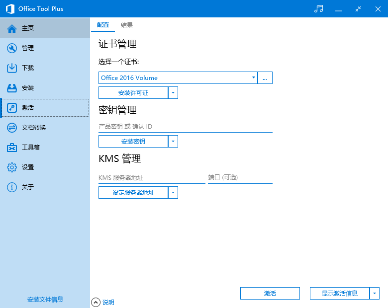
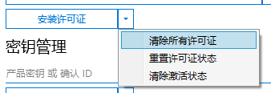

Download
https://server.lancdn.com/landian/OfficeToolPlus/OTPUpdater.exe
Usage
https://blog.csdn.net/u011054333/article/details/83448671
Example
Once OfficeTool installed, start it and location to Active tab:
清除所有许可证
清除所有密钥

Choose "Office 2019 Volume" Then [安装许可证]
Input "NMMKJ-6RK4F-KMJVX-8D9MJ-6MWKP" Then [安装密钥]
Input "kms.03k.org" Then [设定服务器地址]
[激活]